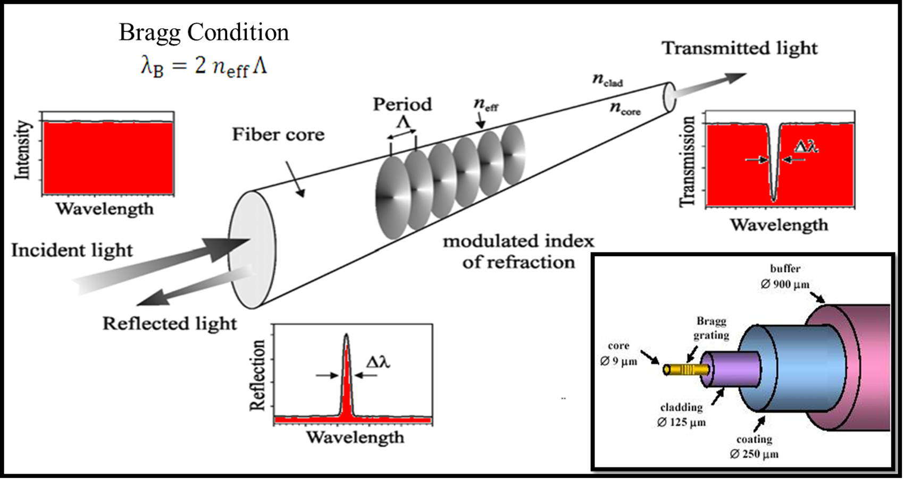
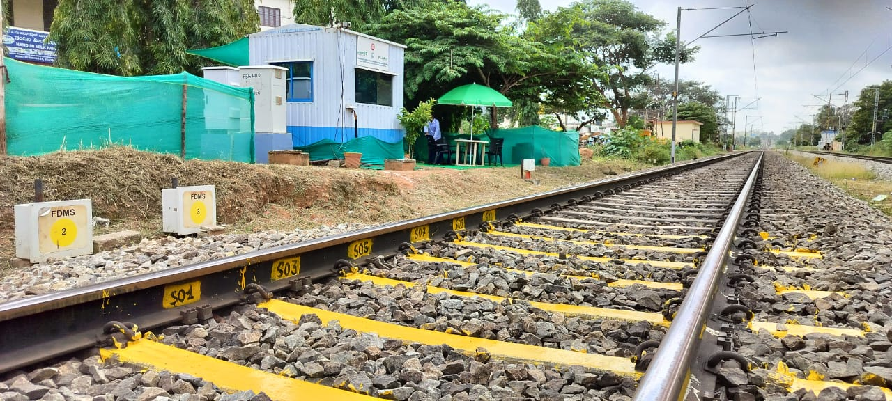
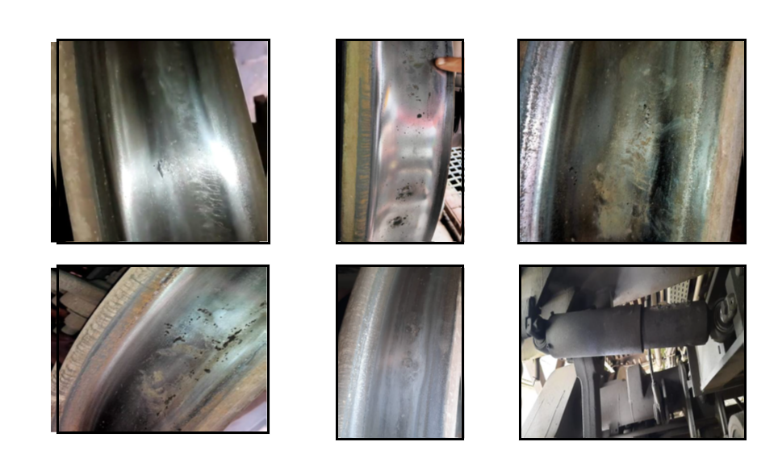

F-WILD (Wheel Impact Load Detector)
The Wheel Impact Load Detector (WILD) system measures the load exerted by a train's wheels on the rails and calculates the impact load of each wheel. When a wheel passes over the rail, it causes the rail to bend. Fiber Bragg Grating (FBG) sensors integrated into the system detect this bending by monitoring changes in the reflected wavelength.
Fiber Bragg Grating (FBG) Sensors
FBG sensors are optical sensors that utilize light reflection within optical fibers to detect changes in physical parameters such as strain, temperature, and pressure. These sensors have a periodic variation in the refractive index along the fiber core, which reflects a specific wavelength of light, called the Bragg wavelength, while allowing other wavelengths to pass. When external forces (strain or temperature changes) are applied, the spacing of the grating and the refractive index change, shifting the reflected wavelength.

Advantages of FBG Technology
- High Sensitivity: Accurate and reliable measurements of strain, temperature, and pressure.
- Multiplexing Capability: Multiple FBG sensors can be embedded along a single fiber, enabling simultaneous monitoring of several points without extra wiring.
- Electromagnetic Immunity: Immune to electromagnetic interference (EMI), suitable for harsh environments.
- Small Size and Lightweight: Compact and lightweight, easily integrated into structures.
- Long-Term Stability: Excellent stability and durability with minimal signal degradation.
- Remote Sensing: Capable of transmitting data over long distances with minimal signal loss, ideal for remote applications.

Key Features of F-WILD
- Comprehensive Wheel Monitoring: Tracks and collects data for each individual wheel of a train as it passes over sensor-equipped rails.
- Data Processing and Classification: Processes data in real-time, classifying wheels based on measured impact load, and detecting defects or anomalies.
- Accurate Load Measurement: FBG sensors provide precise measurements of the load and impact force exerted by each wheel.
- Real-Time Condition Monitoring: Monitors wheel conditions in real-time, enabling prompt detection of issues such as wheel flats or high impact loads.
- Scalable and Flexible Deployment: Can be deployed across multiple rail sections and easily integrated into existing rail infrastructure.
- Automatic Alerts: Sends automatic alerts to railway depots whenever a defect such as high impact loads is detected, allowing for quick maintenance action.
Defective wheels identified by F-WILD:
